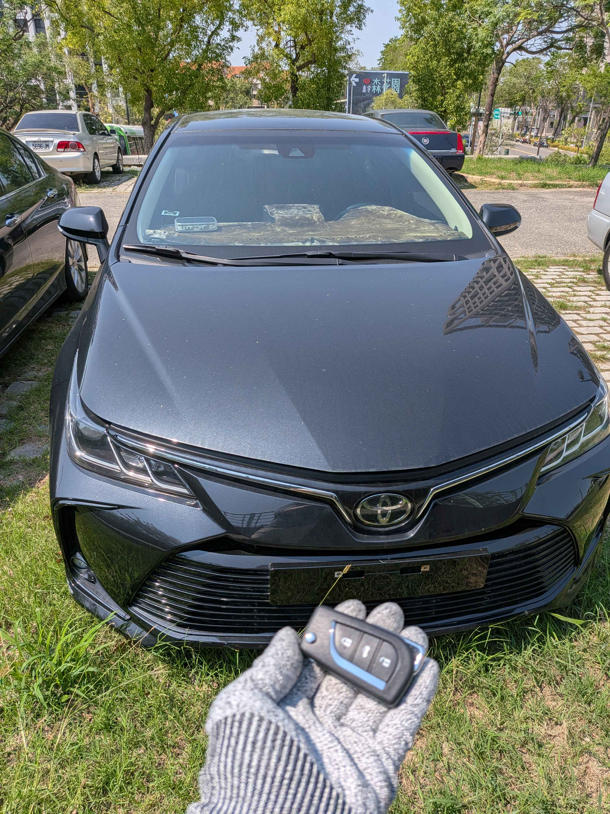

Field Mission Log #20260410-2
【彰化員林】2020 Toyota Altis 12代
智能感應鑰匙全丟救援紀錄
📍 彰化員林市
⚙️ TOYOTA SMART KEY
現場車況確認

今日接獲彰化員林車主的緊急來電。車主駕駛的是擁有「國民神車」稱號的 2020 年式 Toyota Altis (第12代)。由於出遊時不慎遺失了唯一的智能感應鑰匙，車輛反鎖停在戶外停車場，完全無法啟動。
現場狀況：新型 Toyota 智慧鑰匙全丟到場評估
12 代 Altis 遇到「鑰匙全丟」狀況時，車主最需要先確認的是車款年份、停放位置、鑰匙狀態與是否方便到場評估。極致核心團隊依車況與現場條件安排處理，交車前再確認鑰匙基本使用狀態與後續注意事項。
🔓
無損開門
專業鎖匠技術開啟車門，零刮傷、不破壞原車鎖芯
📡
車況與鑰匙確認
依車款年份、停放條件與鑰匙狀態確認適合的服務方向
⚡
交車前確認
當場配製全新原廠同級智慧鑰匙，立刻恢復行程
救援成果
抵達員林現場後，我們先確認停放條件、車況與鑰匙需求，再依現場狀況完成服務。交車前確認新鑰匙基本使用狀態，協助車主恢復後續用車安排。